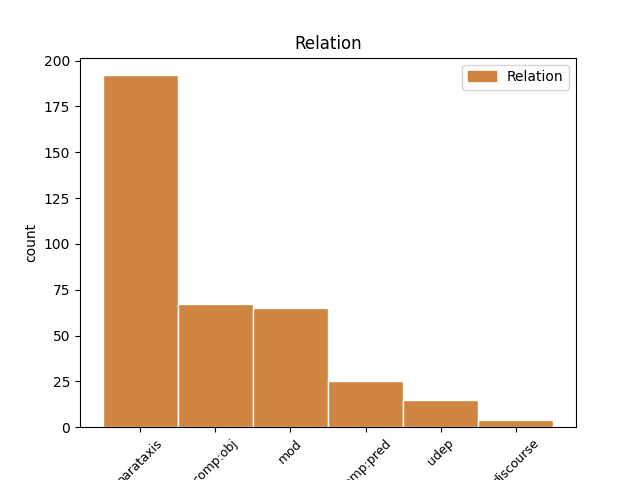
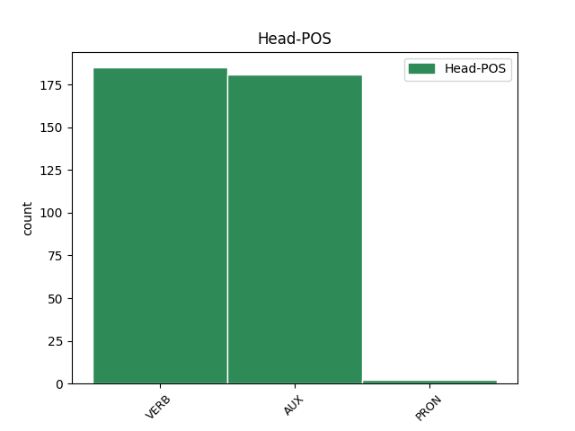
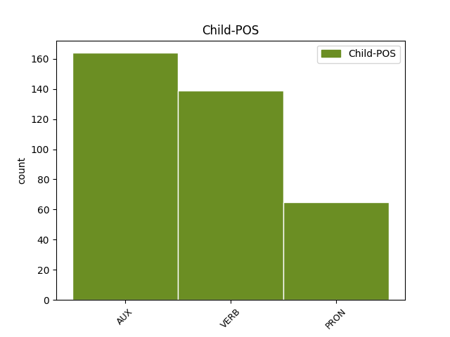

Distribution of features within this leaf



Agreement Rules sorted by frequency.
- When the dependent token is the parataxis(parataxis) of the head token, and the head token is AUX and the dependent token is AUX.
1 « _ _ _ _ 0 _ _ _
2 2013 _ _ _ _ 0 _ _ _
3 թվականի _ _ _ _ 0 _ _ _
4 իմ _ _ _ _ 0 _ _ _
5 գրածն _ _ _ _ 0 _ _ _
6 այսօր _ _ _ _ 0 _ _ _
7 ազատազրկելու _ _ _ _ 0 _ _ _
8 հարց _ _ _ _ 0 _ _ _
9 դարձնելը _ _ _ _ 0 _ _ _
10 նշանակում _ _ _ _ 0 _ _ _
11 է եմ AUX _ Aspect=Imp|Mood=Ind|Number=Sing|Person=3|Polarity=Pos|Tense=Pres|VerbForm=Fin 0 _ _ _
12 քրեորեն _ _ _ _ 0 _ _ _
13 պատժել _ _ _ _ 0 _ _ _
14 լրագրությունը _ _ _ _ 0 _ _ _
15 . _ _ _ _ 0 _ _ _
16 ես _ _ _ _ 0 _ _ _
17 պաշտպանում _ _ _ _ 0 _ _ _
18 եմ _ _ _ _ 0 _ _ _
19 ոչ _ _ _ _ 0 _ _ _
20 թե _ _ _ _ 0 _ _ _
21 պատերազմը _ _ _ _ 0 _ _ _
22 , _ _ _ _ 0 _ _ _
23 ահաբեկչությունը _ _ _ _ 0 _ _ _
24 և _ _ _ _ 0 _ _ _
25 բռնությունը _ _ _ _ 0 _ _ _
26 , _ _ _ _ 0 _ _ _
27 այլ _ _ _ _ 0 _ _ _
28 խաղաղությունը _ _ _ _ 0 _ _ _
29 » _ _ _ _ 0 _ _ _
30 , _ _ _ _ 0 _ _ _
31 - _ _ _ _ 0 _ _ _
32 հայտարարել _ _ _ _ 0 _ _ _
33 է եմ AUX _ Aspect=Imp|Mood=Ind|Number=Sing|Person=3|Polarity=Pos|Tense=Pres|VerbForm=Fin 11 parataxis _ LTranslit=em|Translit=ē
34 Հասան _ _ _ _ 0 _ _ _
35 Ջեմալը _ _ _ _ 0 _ _ _
36 ` _ _ _ _ 0 _ _ _
37 պահանջելով _ _ _ _ 0 _ _ _
38 անմեղ _ _ _ _ 0 _ _ _
39 ճանաչել _ _ _ _ 0 _ _ _
40 իրեն _ _ _ _ 0 _ _ _
41 : _ _ _ _ 0 _ _ _
1 Ես _ _ _ _ 0 _ _ _
2 տասնյոթ _ _ _ _ 0 _ _ _
3 տարեկան _ _ _ _ 0 _ _ _
4 էի եմ AUX _ Aspect=Imp|Mood=Ind|Number=Sing|Person=1|Polarity=Pos|Tense=Imp|VerbForm=Fin 0 _ _ _
5 ու _ _ _ _ 0 _ _ _
6 հաստատ _ _ _ _ 0 _ _ _
7 գիտեի _ _ _ _ 0 _ _ _
8 , _ _ _ _ 0 _ _ _
9 որ _ _ _ _ 0 _ _ _
10 հրապարակ _ _ _ _ 0 _ _ _
11 եմ _ _ _ _ 0 _ _ _
12 իջնելու _ _ _ _ 0 _ _ _
13 , _ _ _ _ 0 _ _ _
14 իսկ _ _ _ _ 0 _ _ _
15 Ֆորմանի _ _ _ _ 0 _ _ _
16 ֆիլմը _ _ _ _ 0 _ _ _
17 ես _ _ _ _ 0 _ _ _
18 հետո _ _ _ _ 0 _ _ _
19 նայեցի նայել VERB _ Aspect=Perf|Mood=Ind|Number=Sing|Person=1|Polarity=Pos|Subcat=Intr|Tense=Past|VerbForm=Fin|Voice=Mid 4 parataxis _ LTranslit=nayel|SpaceAfter=No|Translit=nayec’i
20 , _ _ _ _ 0 _ _ _
21 երբ _ _ _ _ 0 _ _ _
22 Ղարաբաղի _ _ _ _ 0 _ _ _
23 հարցը _ _ _ _ 0 _ _ _
24 բանակցային _ _ _ _ 0 _ _ _
25 սեղանի _ _ _ _ 0 _ _ _
26 չավարտվող _ _ _ _ 0 _ _ _
27 զրույց _ _ _ _ 0 _ _ _
28 դարձավ _ _ _ _ 0 _ _ _
29 ։ _ _ _ _ 0 _ _ _
1 « _ _ _ _ 0 _ _ _
2 Հայաստանում _ _ _ _ 0 _ _ _
3 կիրականացվեն իրականանալ VERB _ Aspect=Prosp|Mood=Cnd|Number=Plur|Person=3|Polarity=Pos|Subcat=Intr|Tense=Pres|VerbForm=Fin|Voice=Pass 0 _ _ _
4 կանոնավոր _ _ _ _ 0 _ _ _
5 կառուցվածքային _ _ _ _ 0 _ _ _
6 բարեփոխումներ _ _ _ _ 0 _ _ _
7 , _ _ _ _ 0 _ _ _
8 անգամ _ _ _ _ 0 _ _ _
9 եթե _ _ _ _ 0 _ _ _
10 այդ _ _ _ _ 0 _ _ _
11 բարեփոխումները _ _ _ _ 0 _ _ _
12 ժողովրդականություն _ _ _ _ 0 _ _ _
13 չվայելեն _ _ _ _ 0 _ _ _
14 » _ _ _ _ 0 _ _ _
15 , _ _ _ _ 0 _ _ _
16 - _ _ _ _ 0 _ _ _
17 ասել _ _ _ _ 0 _ _ _
18 է եմ AUX _ Aspect=Imp|Mood=Ind|Number=Sing|Person=3|Polarity=Pos|Tense=Pres|VerbForm=Fin 3 parataxis _ LTranslit=em|Translit=ē
19 Կարապետյանը _ _ _ _ 0 _ _ _
20 : _ _ _ _ 0 _ _ _
1 « _ _ _ _ 0 _ _ _
2 Հենց _ _ _ _ 0 _ _ _
3 որ _ _ _ _ 0 _ _ _
4 կարողանանք կարողանալ VERB _ Aspect=Prosp|Mood=Sub|Number=Plur|Person=1|Polarity=Pos|Subcat=Intr|Tense=Pres|VerbForm=Fin|Voice=Mid 9 mod _ LTranslit=karoġanal|Translit=karoġanank’
5 կայունացնել _ _ _ _ 0 _ _ _
6 տնտեսական _ _ _ _ 0 _ _ _
7 վիճակը _ _ _ _ 0 _ _ _
8 , _ _ _ _ 0 _ _ _
9 կկարողանանք կարողանալ VERB _ Aspect=Prosp|Mood=Cnd|Number=Plur|Person=1|Polarity=Pos|Subcat=Intr|Tense=Pres|VerbForm=Fin|Voice=Mid 0 _ _ _
10 նաև _ _ _ _ 0 _ _ _
11 կայուն _ _ _ _ 0 _ _ _
12 տնտեսական _ _ _ _ 0 _ _ _
13 աճ _ _ _ _ 0 _ _ _
14 գրանցել _ _ _ _ 0 _ _ _
15 2018 _ _ _ _ 0 _ _ _
16 թ _ _ _ _ 0 _ _ _
17 . _ _ _ _ 0 _ _ _
18 սկսած _ _ _ _ 0 _ _ _
19 » _ _ _ _ 0 _ _ _
20 , _ _ _ _ 0 _ _ _
21 - _ _ _ _ 0 _ _ _
22 ասել _ _ _ _ 0 _ _ _
23 է _ _ _ _ 0 _ _ _
24 վարչապետը _ _ _ _ 0 _ _ _
25 : _ _ _ _ 0 _ _ _
1 Նրանք _ _ _ _ 0 _ _ _
2 չգիտեին գիտել VERB _ Aspect=Imp|Mood=Ind|Number=Plur|Person=3|Polarity=Neg|Subcat=Tran|Tense=Imp|VerbForm=Fin|Voice=Act 0 _ _ _
3 ոչ _ _ _ _ 0 _ _ _
4 ՛ _ _ _ _ 0 _ _ _
5 ԵԱՀԿ _ _ _ _ 0 _ _ _
6 Մինսկի _ _ _ _ 0 _ _ _
7 խմբի _ _ _ _ 0 _ _ _
8 , _ _ _ _ 0 _ _ _
9 ոչ _ _ _ _ 0 _ _ _
10 ՛ _ _ _ _ 0 _ _ _
11 Մադրիդի _ _ _ _ 0 _ _ _
12 , _ _ _ _ 0 _ _ _
13 ոչ _ _ _ _ 0 _ _ _
14 ՛ _ _ _ _ 0 _ _ _
15 Կազանի _ _ _ _ 0 _ _ _
16 փաստաթղթերի _ _ _ _ 0 _ _ _
17 մասին _ _ _ _ 0 _ _ _
18 , _ _ _ _ 0 _ _ _
19 նրանք _ _ _ _ 0 _ _ _
20 դեռ _ _ _ _ 0 _ _ _
21 չէին _ _ _ _ 0 _ _ _
22 լսել _ _ _ _ 0 _ _ _
23 ԵԱՀԿ _ _ _ _ 0 _ _ _
24 համանախագահներից _ _ _ _ 0 _ _ _
25 ոչ _ _ _ _ 0 _ _ _
26 մեկի _ _ _ _ 0 _ _ _
27 անունը _ _ _ _ 0 _ _ _
28 . _ _ _ _ 0 _ _ _
29 նրանք _ _ _ _ 0 _ _ _
30 մնացին մնալ VERB _ Aspect=Perf|Mood=Ind|Number=Plur|Person=3|Polarity=Pos|Subcat=Intr|VerbForm=Fin|Voice=Mid 2 parataxis _ LTranslit=mnal|Translit=mnac’in
31 անցյալ _ _ _ _ 0 _ _ _
32 դարում _ _ _ _ 0 _ _ _
33 ՝ _ _ _ _ 0 _ _ _
34 Ղարաբաղյան _ _ _ _ 0 _ _ _
35 շարժման _ _ _ _ 0 _ _ _
36 ռոմանտիզմով _ _ _ _ 0 _ _ _
37 : _ _ _ _ 0 _ _ _
1 Մի _ _ _ _ 0 _ _ _
2 բան _ _ _ _ 0 _ _ _
3 , _ _ _ _ 0 _ _ _
4 որը _ _ _ _ 0 _ _ _
5 ըստ _ _ _ _ 0 _ _ _
6 էության _ _ _ _ 0 _ _ _
7 նաև _ _ _ _ 0 _ _ _
8 նոր _ _ _ _ 0 _ _ _
9 նախարարը _ _ _ _ 0 _ _ _
10 չի _ _ _ _ 0 _ _ _
11 հերքում _ _ _ _ 0 _ _ _
12 ՝ _ _ _ _ 0 _ _ _
13 ասելով _ _ _ _ 0 _ _ _
14 , _ _ _ _ 0 _ _ _
15 սակայն _ _ _ _ 0 _ _ _
16 , _ _ _ _ 0 _ _ _
17 որ _ _ _ _ 0 _ _ _
18 դեռևս _ _ _ _ 0 _ _ _
19 պարզ _ _ _ _ 0 _ _ _
20 չէ _ _ _ _ 0 _ _ _
21 , _ _ _ _ 0 _ _ _
22 թե _ _ _ _ 0 _ _ _
23 ով _ _ _ _ 0 _ _ _
24 որտեղ _ _ _ _ 0 _ _ _
25 և _ _ _ _ 0 _ _ _
26 ինչպես _ _ _ _ 0 _ _ _
27 է _ _ _ _ 0 _ _ _
28 չարաշահել _ _ _ _ 0 _ _ _
29 , _ _ _ _ 0 _ _ _
30 ու _ _ _ _ 0 _ _ _
31 ինքը ինքը PRON _ Case=Nom|Number=Sing|Person=3|PronType=Emp 32 comp:pred _ LTranslit=ink’ë|Translit=ink’ë
32 չէ եմ AUX _ Aspect=Imp|Mood=Ind|Number=Sing|Person=3|Polarity=Neg|Tense=Pres|VerbForm=Fin 0 _ _ _
33 , _ _ _ _ 0 _ _ _
34 որ _ _ _ _ 0 _ _ _
35 սա _ _ _ _ 0 _ _ _
36 միայն _ _ _ _ 0 _ _ _
37 պետք _ _ _ _ 0 _ _ _
38 է _ _ _ _ 0 _ _ _
39 գնահատի _ _ _ _ 0 _ _ _
40 : _ _ _ _ 0 _ _ _
1 Ինչ _ _ _ _ 0 _ _ _
2 վերաբերում _ _ _ _ 0 _ _ _
3 է եմ AUX _ Aspect=Imp|Mood=Ind|Number=Sing|Person=3|Polarity=Pos|Tense=Pres|VerbForm=Fin 12 mod _ LTranslit=em|Translit=ē
4 Բոբ _ _ _ _ 0 _ _ _
5 Դիլանին _ _ _ _ 0 _ _ _
6 , _ _ _ _ 0 _ _ _
7 կարծում _ _ _ _ 0 _ _ _
8 եմ _ _ _ _ 0 _ _ _
9 , _ _ _ _ 0 _ _ _
10 նա _ _ _ _ 0 _ _ _
11 արժանի _ _ _ _ 0 _ _ _
12 է եմ AUX _ Aspect=Imp|Mood=Ind|Number=Sing|Person=3|Polarity=Pos|Tense=Pres|VerbForm=Fin 0 _ _ _
13 այս _ _ _ _ 0 _ _ _
14 մրցանակին _ _ _ _ 0 _ _ _
15 նախ _ _ _ _ 0 _ _ _
16 երգի _ _ _ _ 0 _ _ _
17 խոսքերի _ _ _ _ 0 _ _ _
18 կարգավիճակը _ _ _ _ 0 _ _ _
19 երաժշտության _ _ _ _ 0 _ _ _
20 պարզունակ _ _ _ _ 0 _ _ _
21 կցորդից _ _ _ _ 0 _ _ _
22 պոեզիայի _ _ _ _ 0 _ _ _
23 մակարդակի _ _ _ _ 0 _ _ _
24 բարձրացնելու _ _ _ _ 0 _ _ _
25 համար _ _ _ _ 0 _ _ _
26 ։ _ _ _ _ 0 _ _ _
1 Եվ _ _ _ _ 0 _ _ _
2 ինչքան _ _ _ _ 0 _ _ _
3 նրա _ _ _ _ 0 _ _ _
4 նկատմամբ _ _ _ _ 0 _ _ _
5 իրավապահ _ _ _ _ 0 _ _ _
6 մարմինները _ _ _ _ 0 _ _ _
7 կամ _ _ _ _ 0 _ _ _
8 հայկական _ _ _ _ 0 _ _ _
9 « _ _ _ _ 0 _ _ _
10 արդարադատությունը _ _ _ _ 0 _ _ _
11 » _ _ _ _ 0 _ _ _
12 ճնշիչ _ _ _ _ 0 _ _ _
13 քայլեր _ _ _ _ 0 _ _ _
14 կատարի _ _ _ _ 0 _ _ _
15 , _ _ _ _ 0 _ _ _
16 ակամայից _ _ _ _ 0 _ _ _
17 նրան նա PRON _ Case=Dat|Definite=Def|Number=Sing|Person=3|PronType=Prs 19 comp:obj _ LTranslit=na|Translit=nran
18 առավել _ _ _ _ 0 _ _ _
19 կհերոսացնի հերոսանալ VERB _ Aspect=Prosp|Mood=Cnd|Number=Sing|Person=3|Polarity=Pos|Subcat=Tran|Tense=Pres|VerbForm=Fin|Voice=Act 0 _ _ _
20 : _ _ _ _ 0 _ _ _
1 Մի _ _ _ _ 0 _ _ _
2 քանի _ _ _ _ 0 _ _ _
3 վայրկյան _ _ _ _ 0 _ _ _
4 հապաղեց հապաղել VERB _ Aspect=Perf|Mood=Ind|Number=Sing|Person=3|Polarity=Pos|Subcat=Intr|Tense=Past|VerbForm=Fin|Voice=Mid 0 _ _ _
5 , _ _ _ _ 0 _ _ _
6 ասես _ _ _ _ 0 _ _ _
7 զանգահարել _ _ _ _ 0 _ _ _
8 էր եմ AUX _ Aspect=Imp|Mood=Ind|Number=Sing|Person=3|Polarity=Pos|Tense=Imp|VerbForm=Fin 4 mod _ LTranslit=em|Translit=ēr
9 միայն _ _ _ _ 0 _ _ _
10 համոզվելու _ _ _ _ 0 _ _ _
11 համար _ _ _ _ 0 _ _ _
12 , _ _ _ _ 0 _ _ _
13 որ _ _ _ _ 0 _ _ _
14 հեռախոսին _ _ _ _ 0 _ _ _
15 նա _ _ _ _ 0 _ _ _
16 է _ _ _ _ 0 _ _ _
17 մոտենալու _ _ _ _ 0 _ _ _
18 , _ _ _ _ 0 _ _ _
19 և _ _ _ _ 0 _ _ _
20 համոզվելով _ _ _ _ 0 _ _ _
21 , _ _ _ _ 0 _ _ _
22 զգուշորեն _ _ _ _ 0 _ _ _
23 ( _ _ _ _ 0 _ _ _
24 նրան _ _ _ _ 0 _ _ _
25 չգիտես _ _ _ _ 0 _ _ _
26 ինչու _ _ _ _ 0 _ _ _
27 այդպես _ _ _ _ 0 _ _ _
28 թվաց _ _ _ _ 0 _ _ _
29 ) _ _ _ _ 0 _ _ _
30 կախեց _ _ _ _ 0 _ _ _
31 խոսափողը _ _ _ _ 0 _ _ _
32 ։ _ _ _ _ 0 _ _ _
1 « _ _ _ _ 0 _ _ _
2 Գուցե _ _ _ _ 0 _ _ _
3 Աստված _ _ _ _ 0 _ _ _
4 ՞ _ _ _ _ 0 _ _ _
5 էլ _ _ _ _ 0 _ _ _
6 խեղճ _ _ _ _ 0 _ _ _
7 է _ _ _ _ 0 _ _ _
8 ... _ _ _ _ 0 _ _ _
9 Իսկ _ _ _ _ 0 _ _ _
10 մենք _ _ _ _ 0 _ _ _
11 նրան _ _ _ _ 0 _ _ _
12 ենք _ _ _ _ 0 _ _ _
13 հայհոյում _ _ _ _ 0 _ _ _
14 , _ _ _ _ 0 _ _ _
15 նրան _ _ _ _ 0 _ _ _
16 ենք _ _ _ _ 0 _ _ _
17 խնդրում _ _ _ _ 0 _ _ _
18 , _ _ _ _ 0 _ _ _
19 նրանից նա PRON _ Case=Abl|Definite=Ind|Number=Sing|Person=3|PronType=Prs 20 udep _ LTranslit=na|Translit=nranic’
20 ենք եմ AUX _ Aspect=Imp|Mood=Ind|Number=Plur|Person=3|Polarity=Pos|Tense=Pres|VerbForm=Fin 0 _ _ _
21 պահանջում _ _ _ _ 0 _ _ _
22 ... _ _ _ _ 0 _ _ _
23 » _ _ _ _ 0 _ _ _
24 , _ _ _ _ 0 _ _ _
25 — _ _ _ _ 0 _ _ _
26 հարցրեց _ _ _ _ 0 _ _ _
27 Եսային _ _ _ _ 0 _ _ _
28 ։ _ _ _ _ 0 _ _ _
1 Նա _ _ _ _ 0 _ _ _
2 չգիտեր գիտել VERB _ Aspect=Imp|Mood=Ind|Number=Sing|Person=3|Polarity=Neg|Subcat=Tran|Tense=Imp|VerbForm=Fin|Voice=Act 0 _ _ _
3 ինչու _ _ _ _ 0 _ _ _
4 է եմ AUX _ Aspect=Imp|Mood=Ind|Number=Sing|Person=3|Polarity=Pos|Tense=Pres|VerbForm=Fin 2 comp:obj _ LTranslit=em|Translit=ē
5 շարժվում _ _ _ _ 0 _ _ _
6 , _ _ _ _ 0 _ _ _
7 գործում _ _ _ _ 0 _ _ _
8 , _ _ _ _ 0 _ _ _
9 և _ _ _ _ 0 _ _ _
10 ինչ _ _ _ _ 0 _ _ _
11 իմաստ _ _ _ _ 0 _ _ _
12 պիտի _ _ _ _ 0 _ _ _
13 ունենա _ _ _ _ 0 _ _ _
14 հետագա _ _ _ _ 0 _ _ _
15 իր _ _ _ _ 0 _ _ _
16 կյանքը _ _ _ _ 0 _ _ _
17 , _ _ _ _ 0 _ _ _
18 երբ _ _ _ _ 0 _ _ _
19 անիմաստ _ _ _ _ 0 _ _ _
20 է _ _ _ _ 0 _ _ _
21 հիմա _ _ _ _ 0 _ _ _
22 ամեն _ _ _ _ 0 _ _ _
23 ինչ _ _ _ _ 0 _ _ _
24 , _ _ _ _ 0 _ _ _
25 երբ _ _ _ _ 0 _ _ _
26 արդեն _ _ _ _ 0 _ _ _
27 քանդվել _ _ _ _ 0 _ _ _
28 է _ _ _ _ 0 _ _ _
29 իր _ _ _ _ 0 _ _ _
30 տեսակի _ _ _ _ 0 _ _ _
31 այն _ _ _ _ 0 _ _ _
32 բնական _ _ _ _ 0 _ _ _
33 կարգաբանությունը _ _ _ _ 0 _ _ _
34 , _ _ _ _ 0 _ _ _
35 որ _ _ _ _ 0 _ _ _
36 ի _ _ _ _ 0 _ _ _
37 վերուստ _ _ _ _ 0 _ _ _
38 նախանշված _ _ _ _ 0 _ _ _
39 է _ _ _ _ 0 _ _ _
40 եղել _ _ _ _ 0 _ _ _
41 ։ _ _ _ _ 0 _ _ _
1 Եթե _ _ _ _ 0 _ _ _
2 մեկը _ _ _ _ 0 _ _ _
3 լիներ _ _ _ _ 0 _ _ _
4 , _ _ _ _ 0 _ _ _
5 էլի _ _ _ _ 0 _ _ _
6 ոչինչ _ _ _ _ 0 _ _ _
7 , _ _ _ _ 0 _ _ _
8 մորը _ _ _ _ 0 _ _ _
9 կասեր ասել VERB _ Aspect=Prosp|Mood=Cnd|Number=Sing|Person=3|Polarity=Pos|Subcat=Tran|Tense=Imp|VerbForm=Fin|Voice=Act 0 _ _ _
10 ՝ _ _ _ _ 0 _ _ _
11 մեռած _ _ _ _ 0 _ _ _
12 ծնվեց ծնվել VERB _ Aspect=Perf|Mood=Ind|Number=Sing|Person=3|Polarity=Pos|Subcat=Intr|Tense=Past|VerbForm=Fin|Voice=Mid 9 comp:obj _ LTranslit=çnvel|SpaceAfter=No|Translit=çnvec’
13 , _ _ _ _ 0 _ _ _
14 — _ _ _ _ 0 _ _ _
15 էդպիսի _ _ _ _ 0 _ _ _
16 ՞ _ _ _ _ 0 _ _ _
17 կյանքեր _ _ _ _ 0 _ _ _
18 են _ _ _ _ 0 _ _ _
19 անցել _ _ _ _ 0 _ _ _
20 ձեռի _ _ _ _ 0 _ _ _
21 տակով _ _ _ _ 0 _ _ _
22 . _ _ _ _ 0 _ _ _
23 կյանքումահ _ _ _ _ 0 _ _ _
24 դասդասելով _ _ _ _ 0 _ _ _
25 գնում _ _ _ _ 0 _ _ _
26 է _ _ _ _ 0 _ _ _
27 ։ _ _ _ _ 0 _ _ _
1 Որքան _ _ _ _ 0 _ _ _
2 էլ _ _ _ _ 0 _ _ _
3 զարհուրելի _ _ _ _ 0 _ _ _
4 ու _ _ _ _ 0 _ _ _
5 անհասկանալի _ _ _ _ 0 _ _ _
6 լինի լինել VERB _ Aspect=Prosp|Mood=Sub|Number=Sing|Person=3|Polarity=Pos|Subcat=Intr|Tense=Pres|VerbForm=Fin|Voice=Mid 14 mod _ LTranslit=linel|SpaceAfter=No|Translit=lini
7 ՝ _ _ _ _ 0 _ _ _
8 մեր _ _ _ _ 0 _ _ _
9 չնախատեսված _ _ _ _ 0 _ _ _
10 պատերազմն _ _ _ _ 0 _ _ _
11 անգամ _ _ _ _ 0 _ _ _
12 ռոմանտիկների _ _ _ _ 0 _ _ _
13 պատերազմ _ _ _ _ 0 _ _ _
14 էր եմ AUX _ Aspect=Imp|Mood=Ind|Number=Sing|Person=3|Polarity=Pos|Tense=Imp|VerbForm=Fin 0 _ _ _
15 : _ _ _ _ 0 _ _ _
1 Էլ _ _ _ _ 0 _ _ _
2 ով _ _ _ _ 0 _ _ _
3 ՞ _ _ _ _ 0 _ _ _
4 կհամարձակվեր համարձակվել VERB _ Aspect=Prosp|Mood=Cnd|Number=Sing|Person=3|Polarity=Pos|Subcat=Intr|Tense=Imp|VerbForm=Fin|Voice=Mid 0 _ _ _
5 Հարութին _ _ _ _ 0 _ _ _
6 երկրորդ _ _ _ _ 0 _ _ _
7 հարցը _ _ _ _ 0 _ _ _
8 տար տալ VERB _ Aspect=Prosp|Mood=Sub|Number=Sing|Person=3|Polarity=Pos|Subcat=Tran|Tense=Imp|VerbForm=Fin|Voice=Act 4 comp:pred _ LTranslit=tal|Translit=tar
9 կամ _ _ _ _ 0 _ _ _
10 հաշիվ _ _ _ _ 0 _ _ _
11 պահանջեր _ _ _ _ 0 _ _ _
12 ։ _ _ _ _ 0 _ _ _
1 Հորն _ _ _ _ 0 _ _ _
2 իհարկե _ _ _ _ 0 _ _ _
3 ավելի _ _ _ _ 0 _ _ _
4 լուրջ _ _ _ _ 0 _ _ _
5 հարցերի _ _ _ _ 0 _ _ _
6 շարան _ _ _ _ 0 _ _ _
7 ունեմ _ _ _ _ 0 _ _ _
8 , _ _ _ _ 0 _ _ _
9 բայց _ _ _ _ 0 _ _ _
10 քանի _ _ _ _ 0 _ _ _
11 որ _ _ _ _ 0 _ _ _
12 իր _ _ _ _ 0 _ _ _
13 « _ _ _ _ 0 _ _ _
14 գրասենյակի _ _ _ _ 0 _ _ _
15 » _ _ _ _ 0 _ _ _
16 տարածքն _ _ _ _ 0 _ _ _
17 է _ _ _ _ 0 _ _ _
18 , _ _ _ _ 0 _ _ _
19 ինքն ինքը PRON _ Case=Nom|Number=Sing|Person=3|PronType=Emp 22 udep _ LTranslit=ink’ë|Translit=ink’n
20 իրեն _ _ _ _ 0 _ _ _
21 այսպես _ _ _ _ 0 _ _ _
22 ձևակերպվեց ձևակերպել VERB _ Aspect=Perf|Mood=Ind|Number=Sing|Person=3|Polarity=Pos|Subcat=Intr|Tense=Past|VerbForm=Fin|Voice=Pass 0 _ _ _
23 հարցը _ _ _ _ 0 _ _ _
24 : _ _ _ _ 0 _ _ _
1 Ակաթի _ _ _ _ 0 _ _ _
2 հայրն _ _ _ _ 0 _ _ _
3 աղջկա _ _ _ _ 0 _ _ _
4 փորը _ _ _ _ 0 _ _ _
5 կլորանալուց _ _ _ _ 0 _ _ _
6 հետո _ _ _ _ 0 _ _ _
7 նրանից _ _ _ _ 0 _ _ _
8 երես _ _ _ _ 0 _ _ _
9 էր _ _ _ _ 0 _ _ _
10 թեքել _ _ _ _ 0 _ _ _
11 , _ _ _ _ 0 _ _ _
12 ոչ _ _ _ _ 0 _ _ _
13 տեսնել _ _ _ _ 0 _ _ _
14 էր _ _ _ _ 0 _ _ _
15 ուզում _ _ _ _ 0 _ _ _
16 , _ _ _ _ 0 _ _ _
17 ոչ _ _ _ _ 0 _ _ _
18 խոսել _ _ _ _ 0 _ _ _
19 , _ _ _ _ 0 _ _ _
20 իսկ _ _ _ _ 0 _ _ _
21 երբ _ _ _ _ 0 _ _ _
22 իմացավ _ _ _ _ 0 _ _ _
23 , _ _ _ _ 0 _ _ _
24 որ _ _ _ _ 0 _ _ _
25 աղջիկ _ _ _ _ 0 _ _ _
26 է _ _ _ _ 0 _ _ _
27 ծնվել _ _ _ _ 0 _ _ _
28 ՝ _ _ _ _ 0 _ _ _
29 « _ _ _ _ 0 _ _ _
30 իրա _ _ _ _ 0 _ _ _
31 նման _ _ _ _ 0 _ _ _
32 լիրբ _ _ _ _ 0 _ _ _
33 պիտի _ _ _ _ 0 _ _ _
34 լինի _ _ _ _ 0 _ _ _
35 , _ _ _ _ 0 _ _ _
36 էլի _ _ _ _ 0 _ _ _
37 » _ _ _ _ 0 _ _ _
38 ասաց _ _ _ _ 0 _ _ _
39 , _ _ _ _ 0 _ _ _
40 ու _ _ _ _ 0 _ _ _
41 կնոջը _ _ _ _ 0 _ _ _
42 պատվիրեց _ _ _ _ 0 _ _ _
43 . _ _ _ _ 0 _ _ _
44 « _ _ _ _ 0 _ _ _
45 Մեր _ _ _ _ 0 _ _ _
46 տուն _ _ _ _ 0 _ _ _
47 էլ _ _ _ _ 0 _ _ _
48 չմտնի _ _ _ _ 0 _ _ _
49 , _ _ _ _ 0 _ _ _
50 բնակարան _ _ _ _ 0 _ _ _
51 վարձիր _ _ _ _ 0 _ _ _
52 , _ _ _ _ 0 _ _ _
53 թող _ _ _ _ 0 _ _ _
54 գնա _ _ _ _ 0 _ _ _
55 իր _ _ _ _ 0 _ _ _
56 համար _ _ _ _ 0 _ _ _
57 ոնց _ _ _ _ 0 _ _ _
58 ուզում _ _ _ _ 0 _ _ _
59 է եմ AUX _ Aspect=Imp|Mood=Ind|Number=Sing|Person=3|Polarity=Pos|Tense=Pres|VerbForm=Fin 60 comp:pred _ LTranslit=em|Translit=ē
60 ապրի ապրել VERB _ Aspect=Prosp|Mood=Sub|Number=Sing|Person=3|Polarity=Pos|Subcat=Intr|Tense=Pres|VerbForm=Fin|Voice=Mid 0 _ _ _
61 » _ _ _ _ 0 _ _ _
62 , _ _ _ _ 0 _ _ _
63 — _ _ _ _ 0 _ _ _
64 ասաց _ _ _ _ 0 _ _ _
65 , _ _ _ _ 0 _ _ _
66 իսկ _ _ _ _ 0 _ _ _
67 մտքում _ _ _ _ 0 _ _ _
68 ՝ _ _ _ _ 0 _ _ _
69 « _ _ _ _ 0 _ _ _
70 Կապույտ _ _ _ _ 0 _ _ _
71 աղջիկ _ _ _ _ 0 _ _ _
72 , _ _ _ _ 0 _ _ _
73 ակաթի _ _ _ _ 0 _ _ _
74 ... _ _ _ _ 0 _ _ _
75 » _ _ _ _ 0 _ _ _
76 ։ _ _ _ _ 0 _ _ _
1 Նրանով նա PRON _ Case=Ins|Definite=Ind|Number=Sing|Person=3|PronType=Prs 0 _ _ _
2 , _ _ _ _ 0 _ _ _
3 որ _ _ _ _ 0 _ _ _
4 այդ _ _ _ _ 0 _ _ _
5 խեղճ _ _ _ _ 0 _ _ _
6 մարդը _ _ _ _ 0 _ _ _
7 իրենց _ _ _ _ 0 _ _ _
8 պահած _ _ _ _ 0 _ _ _
9 ... _ _ _ _ 0 _ _ _
10 որբն _ _ _ _ 0 _ _ _
11 է _ _ _ _ 0 _ _ _
12 . _ _ _ _ 0 _ _ _
13 ամեն _ _ _ _ 0 _ _ _
14 օր _ _ _ _ 0 _ _ _
15 , _ _ _ _ 0 _ _ _
16 ամեն _ _ _ _ 0 _ _ _
17 օր _ _ _ _ 0 _ _ _
18 դրամ _ _ _ _ 0 _ _ _
19 են եմ AUX _ Aspect=Imp|Mood=Ind|Number=Plur|Person=3|Polarity=Pos|Tense=Pres|VerbForm=Fin 1 parataxis _ LTranslit=em|Translit=en
20 տալիս _ _ _ _ 0 _ _ _
21 նրան _ _ _ _ 0 _ _ _
22 , _ _ _ _ 0 _ _ _
23 մի _ _ _ _ 0 _ _ _
24 բաժակ _ _ _ _ 0 _ _ _
25 օղուց _ _ _ _ 0 _ _ _
26 մինչև _ _ _ _ 0 _ _ _
27 մի _ _ _ _ 0 _ _ _
28 շիշ _ _ _ _ 0 _ _ _
29 օղու _ _ _ _ 0 _ _ _
30 դրամ _ _ _ _ 0 _ _ _
31 ։ _ _ _ _ 0 _ _ _
Disagree Examples:
1 Մի _ _ _ _ 0 _ _ _
2 խոսքով _ _ _ _ 0 _ _ _
3 ՝ _ _ _ _ 0 _ _ _
4 մենք _ _ _ _ 0 _ _ _
5 դրա _ _ _ _ 0 _ _ _
6 հետ _ _ _ _ 0 _ _ _
7 էլ _ _ _ _ 0 _ _ _
8 գործ _ _ _ _ 0 _ _ _
9 չունենք _ _ _ _ 0 _ _ _
10 , _ _ _ _ 0 _ _ _
11 մերը մեր PRON _ Case=Nom|Definite=Def|Number=Plur|Person=1|Poss=Yes|PronType=Prs 12 comp:pred _ LTranslit=mer|Translit=merë
12 չէ եմ AUX _ Aspect=Imp|Mood=Ind|Number=Sing|Person=3|Polarity=Neg|Tense=Pres|VerbForm=Fin 0 _ _ _
13 այլևս _ _ _ _ 0 _ _ _
14 , _ _ _ _ 0 _ _ _
15 մերը _ _ _ _ 0 _ _ _
16 սա _ _ _ _ 0 _ _ _
17 է _ _ _ _ 0 _ _ _
18 ՝ _ _ _ _ 0 _ _ _
19 դժոխքը _ _ _ _ 0 _ _ _
20 , _ _ _ _ 0 _ _ _
21 որը _ _ _ _ 0 _ _ _
22 , _ _ _ _ 0 _ _ _
23 սակայն _ _ _ _ 0 _ _ _
24 , _ _ _ _ 0 _ _ _
25 հասցրել _ _ _ _ 0 _ _ _
26 ենք _ _ _ _ 0 _ _ _
27 սիրել _ _ _ _ 0 _ _ _
28 . _ _ _ _ 0 _ _ _
29 դեհ _ _ _ _ 0 _ _ _
30 , _ _ _ _ 0 _ _ _
31 շանը _ _ _ _ 0 _ _ _
32 որտեղ _ _ _ _ 0 _ _ _
33 էլ _ _ _ _ 0 _ _ _
34 կապես _ _ _ _ 0 _ _ _
35 , _ _ _ _ 0 _ _ _
36 կապվում _ _ _ _ 0 _ _ _
37 - _ _ _ _ 0 _ _ _
38 ընտելանում _ _ _ _ 0 _ _ _
39 - _ _ _ _ 0 _ _ _
40 սիրում _ _ _ _ 0 _ _ _
41 է _ _ _ _ 0 _ _ _
42 ։ _ _ _ _ 0 _ _ _
1 Մի _ _ _ _ 0 _ _ _
2 խոսքով _ _ _ _ 0 _ _ _
3 ՝ _ _ _ _ 0 _ _ _
4 մենք _ _ _ _ 0 _ _ _
5 դրա _ _ _ _ 0 _ _ _
6 հետ _ _ _ _ 0 _ _ _
7 էլ _ _ _ _ 0 _ _ _
8 գործ _ _ _ _ 0 _ _ _
9 չունենք ունեմ VERB _ Aspect=Imp|Mood=Ind|Number=Plur|Person=1|Polarity=Neg|Subcat=Tran|Tense=Pres|VerbForm=Fin|Voice=Act 0 _ _ _
10 , _ _ _ _ 0 _ _ _
11 մերը _ _ _ _ 0 _ _ _
12 չէ _ _ _ _ 0 _ _ _
13 այլևս _ _ _ _ 0 _ _ _
14 , _ _ _ _ 0 _ _ _
15 մերը _ _ _ _ 0 _ _ _
16 սա _ _ _ _ 0 _ _ _
17 է _ _ _ _ 0 _ _ _
18 ՝ _ _ _ _ 0 _ _ _
19 դժոխքը _ _ _ _ 0 _ _ _
20 , _ _ _ _ 0 _ _ _
21 որը _ _ _ _ 0 _ _ _
22 , _ _ _ _ 0 _ _ _
23 սակայն _ _ _ _ 0 _ _ _
24 , _ _ _ _ 0 _ _ _
25 հասցրել _ _ _ _ 0 _ _ _
26 ենք _ _ _ _ 0 _ _ _
27 սիրել _ _ _ _ 0 _ _ _
28 . _ _ _ _ 0 _ _ _
29 դեհ _ _ _ _ 0 _ _ _
30 , _ _ _ _ 0 _ _ _
31 շանը _ _ _ _ 0 _ _ _
32 որտեղ _ _ _ _ 0 _ _ _
33 էլ _ _ _ _ 0 _ _ _
34 կապես կապել VERB _ Aspect=Prosp|Mood=Sub|Number=Sing|Person=2|Polarity=Pos|Subcat=Tran|Tense=Pres|VerbForm=Fin|Voice=Act 9 parataxis _ LTranslit=kapel|SpaceAfter=No|Translit=kapes
35 , _ _ _ _ 0 _ _ _
36 կապվում _ _ _ _ 0 _ _ _
37 - _ _ _ _ 0 _ _ _
38 ընտելանում _ _ _ _ 0 _ _ _
39 - _ _ _ _ 0 _ _ _
40 սիրում _ _ _ _ 0 _ _ _
41 է _ _ _ _ 0 _ _ _
42 ։ _ _ _ _ 0 _ _ _
1 Ի _ _ _ _ 0 _ _ _
2 սկզբանե _ _ _ _ 0 _ _ _
3 մեր _ _ _ _ 0 _ _ _
4 ուշքումիտքն _ _ _ _ 0 _ _ _
5 ինքնապահպանումն _ _ _ _ 0 _ _ _
6 էր եմ AUX _ Aspect=Imp|Mood=Ind|Number=Sing|Person=3|Polarity=Pos|Tense=Imp|VerbForm=Fin 0 _ _ _
7 , _ _ _ _ 0 _ _ _
8 ստամոքսը _ _ _ _ 0 _ _ _
9 լցնելը _ _ _ _ 0 _ _ _
10 , _ _ _ _ 0 _ _ _
11 էդ _ _ _ _ 0 _ _ _
12 հետո _ _ _ _ 0 _ _ _
13 , _ _ _ _ 0 _ _ _
14 երբ _ _ _ _ 0 _ _ _
15 անտառից _ _ _ _ 0 _ _ _
16 փախանք _ _ _ _ 0 _ _ _
17 , _ _ _ _ 0 _ _ _
18 քաղաքակրթություն _ _ _ _ 0 _ _ _
19 ստեղծեցինք ստեղծել VERB _ Aspect=Perf|Mood=Ind|Number=Plur|Person=1|Polarity=Pos|Subcat=Tran|Tense=Past|VerbForm=Fin|Voice=Act 6 parataxis _ LTranslit=steġçel|SpaceAfter=No|Translit=steġçec’ink’
20 , _ _ _ _ 0 _ _ _
21 ազատ _ _ _ _ 0 _ _ _
22 ու _ _ _ _ 0 _ _ _
23 համեմատաբար _ _ _ _ 0 _ _ _
24 անվտանգ _ _ _ _ 0 _ _ _
25 ժամանակ _ _ _ _ 0 _ _ _
26 ունեցանք _ _ _ _ 0 _ _ _
27 ուրիշ _ _ _ _ 0 _ _ _
28 , _ _ _ _ 0 _ _ _
29 անտագնապ _ _ _ _ 0 _ _ _
30 աչքով _ _ _ _ 0 _ _ _
31 մեր _ _ _ _ 0 _ _ _
32 շուրջը _ _ _ _ 0 _ _ _
33 նայելու _ _ _ _ 0 _ _ _
34 : _ _ _ _ 0 _ _ _
1 Է եմ AUX _ Aspect=Imp|Mood=Ind|Number=Sing|Person=3|Polarity=Pos|Tense=Pres|VerbForm=Fin 6 discourse _ LTranslit=em|Translit=Ē
2 հա _ _ _ _ 0 _ _ _
3 , _ _ _ _ 0 _ _ _
4 բա _ _ _ _ 0 _ _ _
5 ինչ _ _ _ _ 0 _ _ _
6 անենք անել VERB _ Aspect=Prosp|Mood=Sub|Number=Plur|Person=1|Polarity=Pos|Subcat=Tran|Tense=Pres|VerbForm=Fin|Voice=Act 0 _ _ _
7 , _ _ _ _ 0 _ _ _
8 հո _ _ _ _ 0 _ _ _
9 սոված _ _ _ _ 0 _ _ _
10 չենք _ _ _ _ 0 _ _ _
11 ՞ _ _ _ _ 0 _ _ _
12 մնալու _ _ _ _ 0 _ _ _
13 ։ _ _ _ _ 0 _ _ _
1 Ուտյուտյու _ _ _ _ 0 _ _ _
2 ՜ _ _ _ _ 0 _ _ _
3 , _ _ _ _ 0 _ _ _
4 բալիկ _ _ _ _ 0 _ _ _
5 ջան _ _ _ _ 0 _ _ _
6 , _ _ _ _ 0 _ _ _
7 պստլիկ _ _ _ _ 0 _ _ _
8 ջան _ _ _ _ 0 _ _ _
9 , _ _ _ _ 0 _ _ _
10 արի _ _ _ _ 0 _ _ _
11 մոտս _ _ _ _ 0 _ _ _
12 , _ _ _ _ 0 _ _ _
13 ուտեմ ուտել VERB _ Aspect=Prosp|Mood=Sub|Number=Sing|Person=1|Polarity=Pos|Subcat=Tran|Tense=Pres|VerbForm=Fin|Voice=Act 0 _ _ _
14 քեզ դու PRON _ Case=Dat|Number=Sing|Person=2|Polite=Infm|PronType=Prs 13 comp:obj _ LTranslit=dow|SpaceAfter=No|Translit=k’ez
15 , _ _ _ _ 0 _ _ _
16 կծեմ _ _ _ _ 0 _ _ _
17 թուշդ _ _ _ _ 0 _ _ _
18 , _ _ _ _ 0 _ _ _
19 ում _ _ _ _ 0 _ _ _
20 ՞ _ _ _ _ 0 _ _ _
21 ես _ _ _ _ 0 _ _ _
22 նման _ _ _ _ 0 _ _ _
23 , _ _ _ _ 0 _ _ _
24 ինձ _ _ _ _ 0 _ _ _
25 ՛ _ _ _ _ 0 _ _ _
26 , _ _ _ _ 0 _ _ _
27 չէ _ _ _ _ 0 _ _ _
28 , _ _ _ _ 0 _ _ _
29 ինձ _ _ _ _ 0 _ _ _
30 ՛ _ _ _ _ 0 _ _ _
31 , _ _ _ _ 0 _ _ _
32 իսկ _ _ _ _ 0 _ _ _
33 ում _ _ _ _ 0 _ _ _
34 ՞ _ _ _ _ 0 _ _ _
35 ես _ _ _ _ 0 _ _ _
36 շատ _ _ _ _ 0 _ _ _
37 սիրում _ _ _ _ 0 _ _ _
38 : _ _ _ _ 0 _ _ _